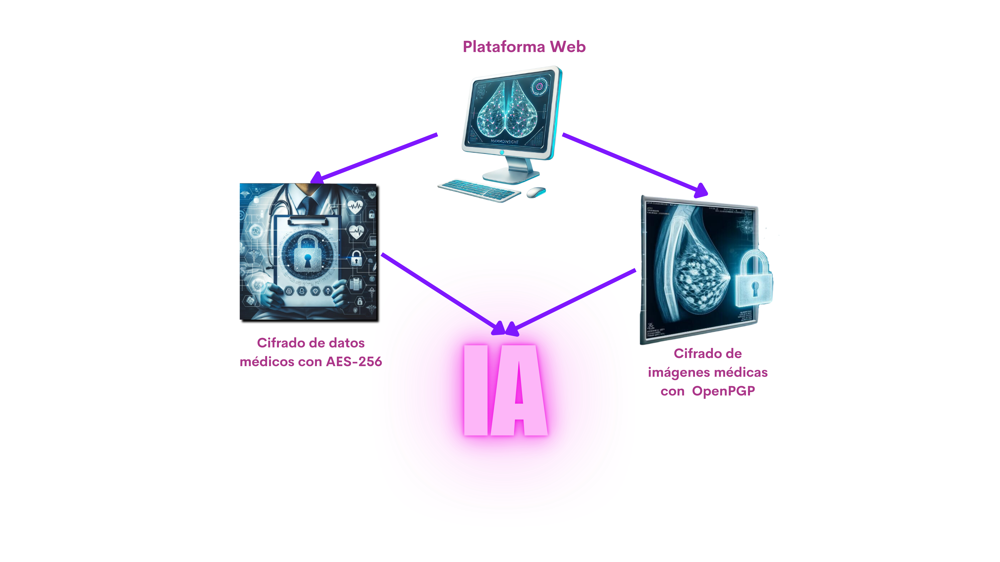

Servicios
Plataforma Integral
Nuestra plataforma ofrecerá a los médicos acceso a una interfaz centralizada y segura donde podrán gestionar el análisis de mamografías y los datos clínicos de sus pacientes. Cada profesional tendrá la capacidad de acceder a un listado completo de sus pacientes, con toda la información relevante y las imágenes asociadas, sin importar su ubicación.
La plataforma está diseñada para ser accesible desde cualquier lugar, lo que permite a los médicos revisar los casos de manera rápida y eficiente, con la flexibilidad de actualizar los datos y realizar diagnósticos en tiempo real. Este enfoque no solo optimiza el flujo de trabajo, sino que también garantiza la seguridad de la información sensible, cumpliendo con los más altos estándares de protección de datos.

Servicios (en desarrollo)
Nuestro equipo está enfocado en desarrollar soluciones innovadoras para la detección temprana del cáncer de mama, combinando inteligencia artificial y modelos estadísticos predictivos. Estamos lanzando versiones de Producto Mínimo Viable (PMV), que son versiones funcionales iniciales de nuestros modelos clave.
1) Análisis de imágenes mamográficas con IA
🎀 ML01. Modelo de evaluación de densidad de tejido mamario
Este modelo permitirá a los médicos clasificar la densidad del tejido mamario, un factor importante en la evaluación del riesgo de cáncer de mama.
🎀 ML02. Modelo de clasificación
Capaz de identificar si una imagen es potencialmente benigna o maligna.
Más información próximamente disponible.
🎀 ML03. Modelo de segmentación
Este modelo identificará y marcará automáticamente zonas específicas en las mamografías.
Más información próximamente disponible.
2) Modelos estadísticos basados en datos clínicos
🎀 GAIL01. Modelo de evaluación de riesgo
Basado en el Modelo de Gail, este sistema evalúa factores clínicos y genéticos para personalizar decisiones clínicas y mejorar la precisión diagnóstica.
Prueba el PMV aquíOpen Tools para la Salud
Explora algunas de nuestras herramientas innovadoras para mejorar la seguridad y precisión en el diagnóstico médico. A continuación, te ofrecemos la oportunidad de probar varias funcionalidades sin restricciones.
Cifrado de datos (AES y OpenPGP)
Prueba cómo protegemos mamografías y datos clínicos con algoritmos de cifrado avanzado (SEG001).
Prueba el PMV (SEG001)Eliminación de etiquetas en imágenes (CT001)
Retira etiquetas de imágenes mamográficas para mantener la confidencialidad del paciente.
Prueba el PMV (CT001)Anonimización de archivos DICOM (DS001)
Elimina la información sensible de imágenes DICOM para análisis seguro y privado.
Prueba el PMV (DS001)